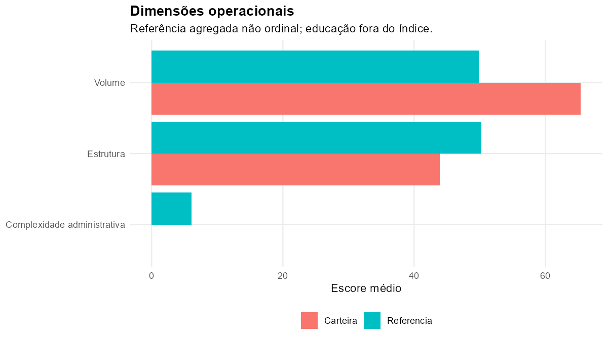
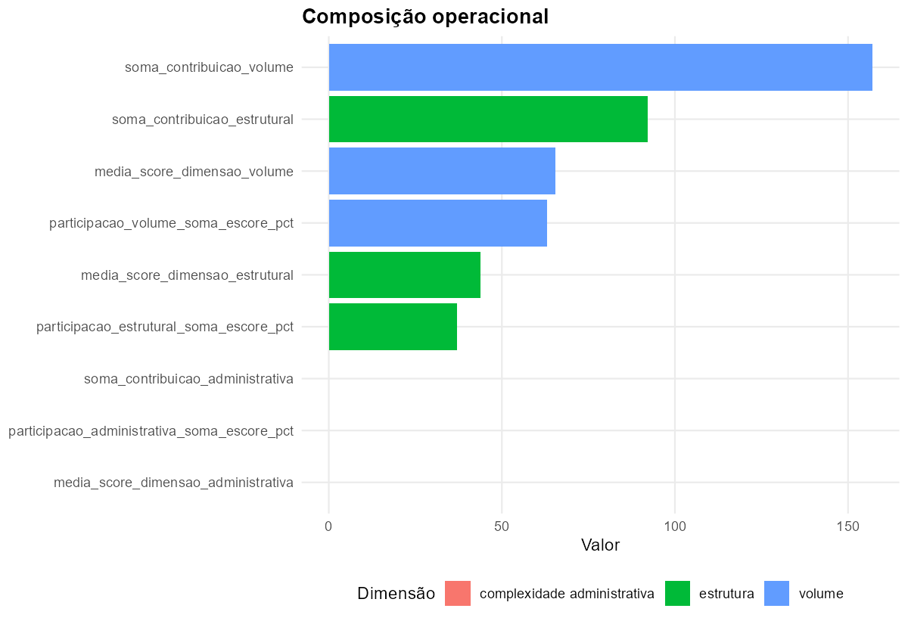
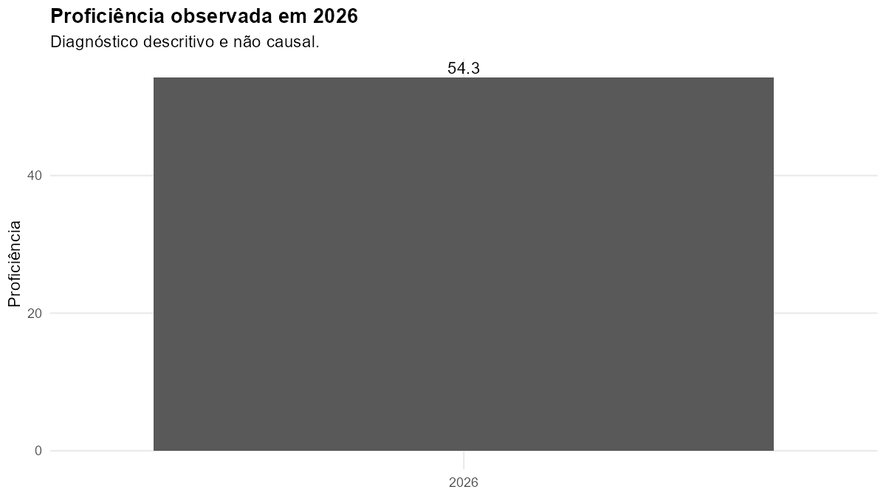

| ID | Escola | INEP | Vínculo administrativo | Índice | Volume | Estrutura | Administração | Ficha |
|---|---|---|---|---|---|---|---|---|
| ESC_002 | EMEB DR LIBERATO SALZANO VIEIRA DA CUNHA | 43105505 | clarissa | 39,1 | 69,7 | 32,1 | 0,0 | abrir ficha |
| ESC_011 | EMEF DEP VICTOR ISSLER | 43109225 | clarissa | 49,5 | 87,5 | 41,3 | 0,0 | abrir ficha |
| ESC_016 | EMEF GOV ILDO MENEGHETTI | 43107508 | clarissa | 59,9 | 95,8 | 61,8 | 0,0 | abrir ficha |
| ESC_019 | EMEF JEAN PIAGET | 43172474 | clarissa | 34,5 | 52,5 | 38,6 | 0,0 | abrir ficha |
| ESC_024 | EMEF LAURO RODRIGUES | 43109209 | clarissa | 31,9 | 37,4 | 48,6 | 0,0 | abrir ficha |
| ESC_048 | EMEF VER ANTONIO GIUDICE | 43172482 | clarissa | 34,2 | 49,5 | 41,1 | 0,0 | abrir ficha |